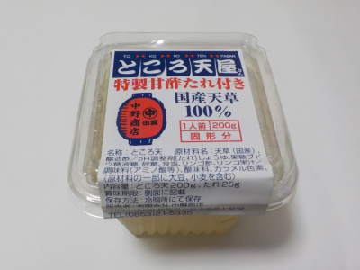

中野商店の「ところ天屋さん特製天酢たれ付きところ天」を食べました。
2022/07/30

暑くて食欲がないってことはないです。食べたかったので買いました。
このところ天はクセがなく食べやすかったです。特製天酢タレが濃い味で量が多かったです。
この商品は広島県の石井食品が製造して、中野商品が販売のようです。
島根県出雲市姫原町1-6-8
2022/07/30

暑くて食欲がないってことはないです。食べたかったので買いました。
このところ天はクセがなく食べやすかったです。特製天酢タレが濃い味で量が多かったです。
この商品は広島県の石井食品が製造して、中野商品が販売のようです。